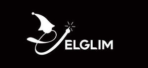

Trade Mark Journal No.2025/020 16 May 2025
UK00004195392 28 April 2025 (14,20,28)

- Class 14
- Charms [jewelry]; Jewellery, including imitation jewellery and plastic jewellery; Jewellery items; Jewellery in the form of beads; Choker necklaces; Children's jewelry; Jewellery incorporating pearls; Jewellery made of non-precious metal; Chokers; Jewellery products; Jewellery made of plastics; Jewelry boxes, not of metal; Clocks and watches; Alarm clocks; Wrist watches; Wristlet watches; Sports watches; Watches for nurses; Electronic alarm clocks; Watches for sporting use.
- Class 20
- Seat cushions; Cushions; Chair cushions; Stadium seats (Cushions for -); Seat pads; Cushions [furniture]; Seat pads being parts of furniture; Nap mats [cushions or mattresses]; Pet cushions; Cushions (Pet -); Support cushioning for use in car safety seats for babies; Soft furnishings [cushions]; Head support cushions for babies; Neck support cushions; Beds, bedding, mattresses, pillows and cushions; Cushions for lining pet crates; Seating furniture; Seats adapted for babies; Seats for children; Back support cushions, not for medical purposes.
- Class 28
- Inflatable toys; Inflatable pool toys; Outdoor toys; Christmas tree skirts; Christmas tree ornaments; Christmas tree decorations; Christmas tree stands; Christmas tree [synthetic]; Toy Christmas trees; Tinsel for decorating Christmas trees; Decorations and ornaments for Christmas trees; Christmas tree stand covers; Artificial Christmas trees; Christmas trees (Artificial -); Christmas stockings; Artificial snow for Christmas trees; Festive decorations, party novelties and artificial Christmas trees; Christmas trees of synthetic materials; Halloween masks.
Shenzhen Angrun Technology Co., Ltd.
Representative: IPP Master Limited